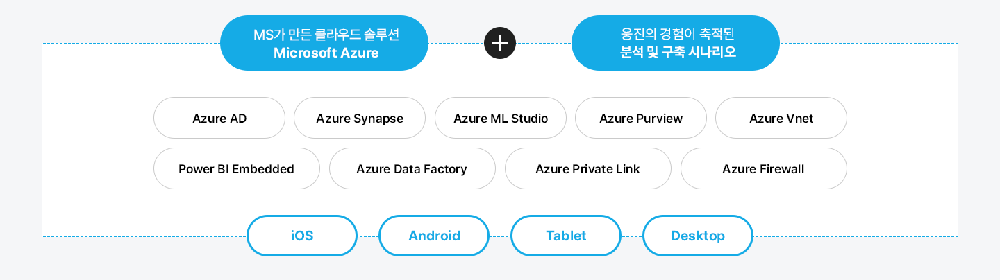
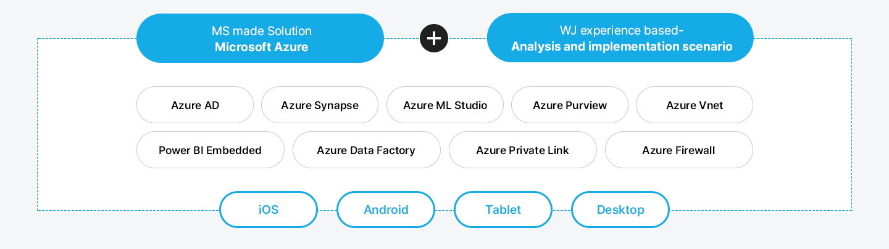
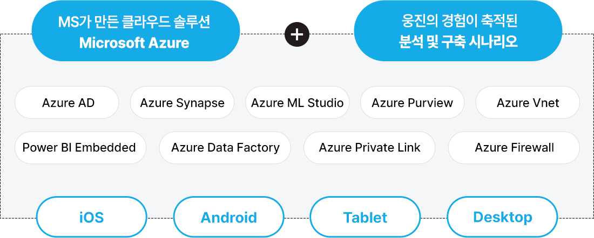
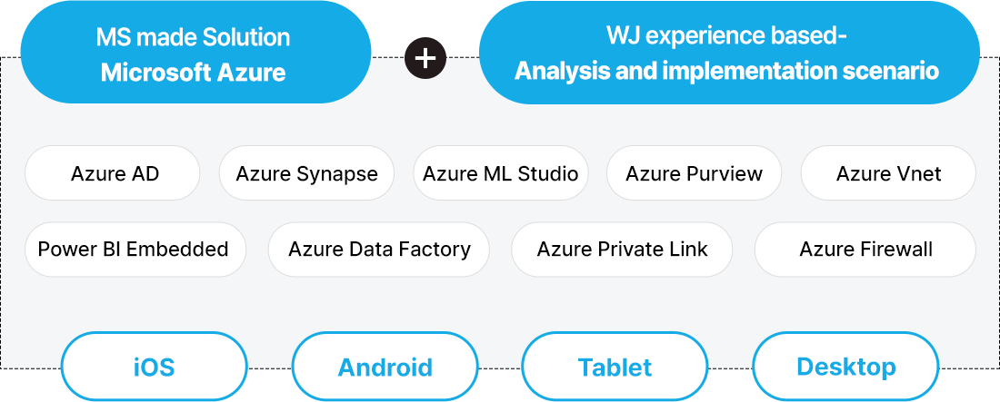
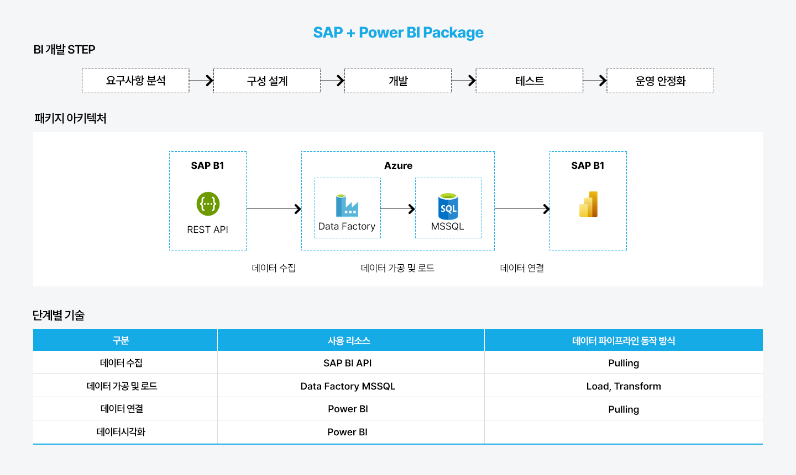
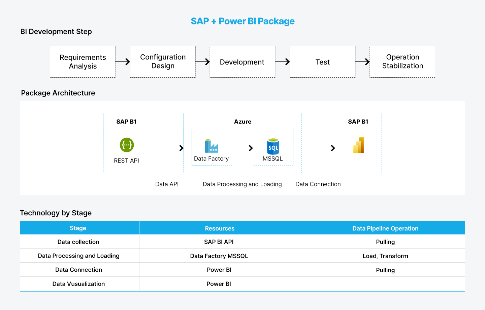
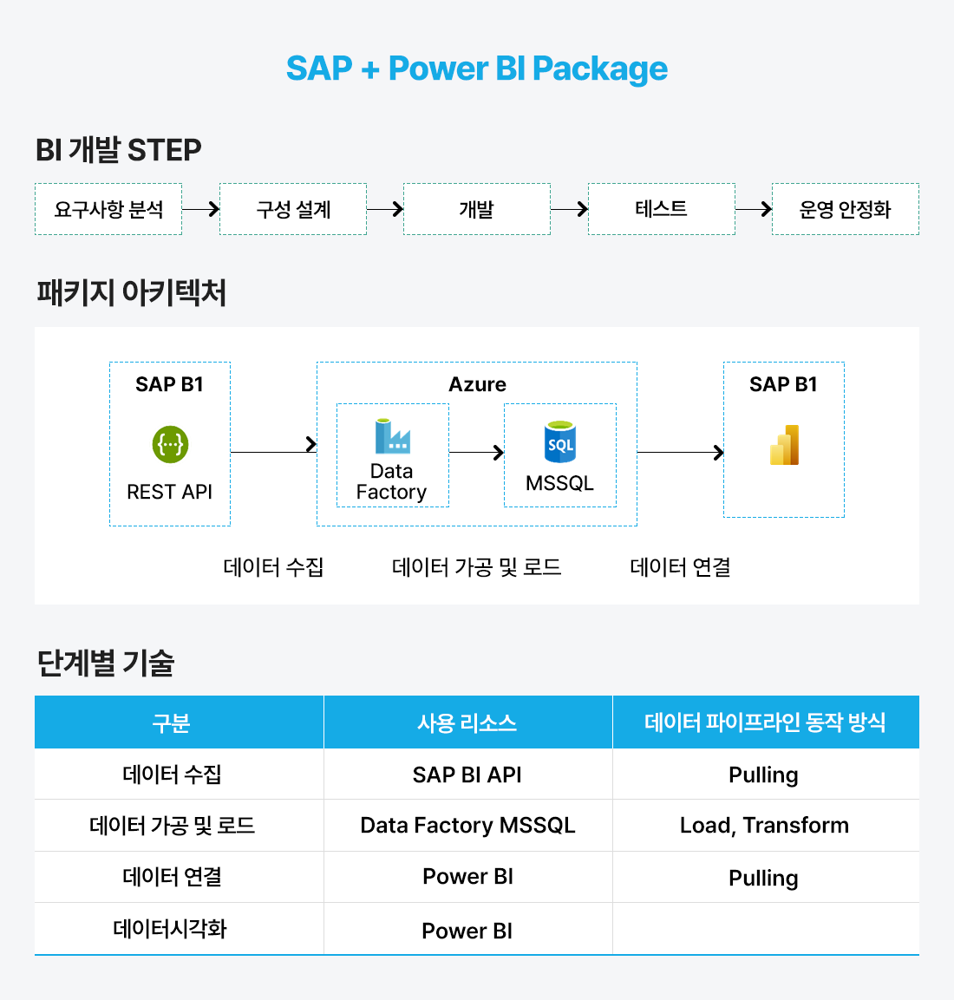
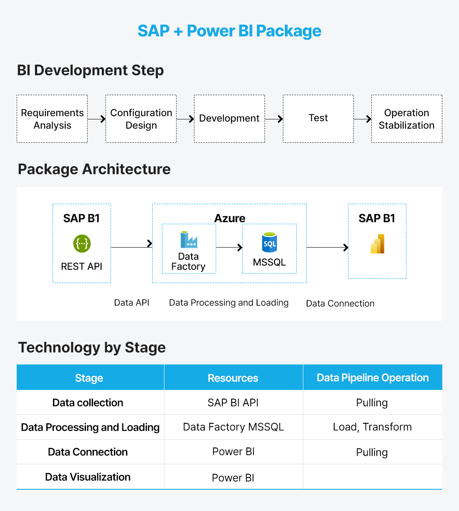

Microsoft Power Platform이란?
로우코드·노코드 기반의 업무 혁신 플랫폼입니다. Power Apps, Power Automate, Power BI, Copilot Studio 등을 통해 누구나 앱 개발과 자동화를 할 수 있습니다. 기업은 데이터 활용과 협업을 강화해 민첩한 디지털 혁신과 AI 기반 업무 혁신을 실현할 수 있습니다.
Microsoft Power Platform
Microsoft Power Platform은 로우 코드 플랫폼을 사용하여 앱, 워크플로 및 AI 기반 도구를 보호하고 관리하여 데이터로 더 많은 작업을 수행할 수 있습니다. AI 기반 도구를 사용하여 앱 개발 속도 향상, 업무 자동화, 데이터 시각화를 통해 반복적인 작업을 줄이고 솔루션을 Microsoft Fabric, Azure, Microsoft 365 및 Dynamics 365에 연결하여 더 많은 가능성을 만들어보세요.
Microsoft Power Platform
Power Apps
Power Pages
Power
Automate
Power
Virtual Agents
AI Chatbot
Power BI
시각화 도구
Power Platform 주요 특징
Low Code
자동화/효율화
비용절감
확장성/유연성
협업 통합
데이터 인사이트
Power Platform 활용 방안
비즈니스 전 영역에서 활용이 가능한 Power Platform은 기업의 디지털 전환을 가속화하고, 업무 프로세스의 효율성을 극대화하며, 데이터 기반 의사결정을 지원합니다. 이를 통해 기업은 비용 절감, 생산성 향상, 경쟁력 강화 등 다양한 혜택을 누릴 수 있습니다.
영업/마케팅
- 인보이스 처리 자동화
- 실시간 영업 현황 분석 보고서 개발
- 실시간 영업 데이터 생성 및 편집 앱 개발
- 고객 경험 분석 자동화
- 소셜 미디어 분석 자동화
회계/재무
- 실시간 회계/재무 보고서 개발
- 회계 프로세스 자동화
- 전표처리 자동화
- 매출 분석 및 예측 시각화 보고서 개발
- 예산 승인 및 관리 업무 자동화
제조/생산
- 실시간 생산라인 현황 확인 및
- 관리 보고서 개발
- 제조 파이프라인 추적 자동화 및 시각화
- 재고 및 물류 관리 추적 자동화 및 시각화
- 직원 생산관리 앱 개발
- 물류 입출고 관리 앱 개발
관리/관제
- M365 사용량 분석 보고서 개발
- 자동화 프로세스 모니터링 보고서 개발
- 오류 시 알림 전송 자동화
- 로그 분석 보고서 개발
- KPI 분석 보고서 개발
- 프로젝트 관리 앱 개발
- 직원 관리 앱 개발
웅진만의 특화된 Power Platform 패키지
웅진은 Microsoft의 Gold Partner이자 SAP Gold Partner로서, Power Platform을 통한 고객의 디지털 전환을 더 안정적으로 지원 합니다. 고객은 고객의 니즈에 따라 웅진의 경험을 통해 만든 다양한 패키지를 손쉽게 활용할 수 있습니다.
SAP with Power Platform Package Service
웅진의 수많은 SAP 및 클라우드 인프라 구축 경험을 통한 안정적인 Power Platform 환경을 구축하여 여러 환경과 필요 요건에 맞춘 Digital Transformation을 지원합니다.




Power Platform Specialty By Woongjin ㅣ SAP + Power Automate Package
재무, 영업, 생산, 마스터 데이터 관리 등과 같은 업무 안에서 SAP 기준 업무 수행을 위한 정형화 작업을 진행하여 핵심 수행 단계를 패키지화 하여 제공합니다.




Power Platform Specialty By Woongjin ㅣ SAP + Power BI Package
SAP 데이터 기반으로 동적 및 실시간 시각화 보고서를 구축하기 위한 단계를 패키지화 하여 제공합니다.
Power Platform 도입 시 고려 사항
Power Platform을 성공적으로 도입하기 위해서는 여러 가지 중요한 요소들을 신중하게 고려해야 합니다. 웅진은 경험을 바탕으로 고객이 Power Platform을 도입할 때 반드시 검토해야 할 핵심 요소들에 대한 전문적인 컨설팅을 제공합니다.
1. 인프라 호환성
2. 보안 및 규정 준수
3. 확장성
4. 지원 및 유지보수
5. 비용 효율성
 BMW코리아BMW Korea on DMS BMW Korea on DMS
BMW코리아BMW Korea on DMS BMW Korea on DMS
BMW코리아는 비즈니스 확대에 따른 효율적 운영을 위해 서비스의 신뢰성과 확장성이 중요해졌습니다. 클라우드의 장점인 글로벌 비즈니스의 확대, 빠른 대응 및 안정적인 운영을 위해 웅진과 함께 AWS 클라우드 기반의 DMS를 도입했습니다.
[의의]
- EKS 클러스터에 자동화되고 신뢰할 수 있는 인프라를 구현하여 보다 확장성 있는 서비스 제공
- 판매 시스템 업그레이드 및 안정성 보장
BMW코리아BMW Korea on DMS
BMW코리아BMW Korea on DMS